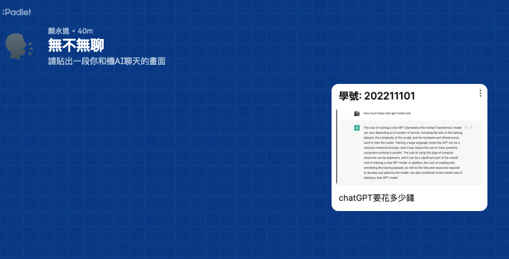
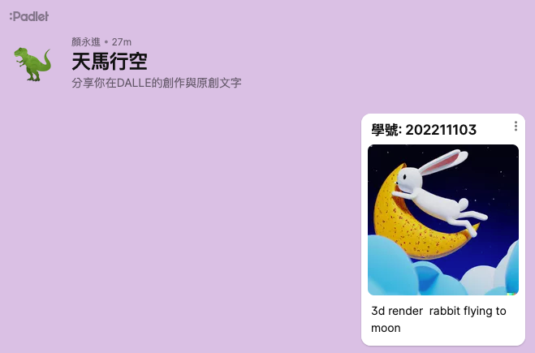

科技力Ⅹ雙語Ⅹ跨域教學示例
Table of Contents

1. 研習內容
- 研習對象及人數:本市公私立國中教師，預估30人
- 研習時間:111年12月29日（星期四）9:00-12:40
研習地點:輔導團305電腦教室

2. 跨域X雙語 powered by 科技力
2.2. 跨域-Why
- 背景
- 社會變動複雜，解決一問題需要不同領域的知識
- 跨領域人才
- 社會變動複雜，解決一問題需要不同領域的知識
- 跨域典型案例
- 專業教育理論/學科專業: 教師
- 法律X科技: 達文西個資暨高科技法律事務所
- 人力管理/產業技術: 專案經理(PM)
- 資訊軟體、硬體: 手機研發
- 物理、化學、數學跨領域: 半導體產業
- 醫學、電機、資工: 病毒基因序列比對、傳播鏈解析、抗體檢測機台
- 專業教育理論/學科專業: 教師
2.4. 雙語-Why
- 學習資源豐富
- 未來工作需求
- 2030雙語國家政策
2.5. 雙語-How
- 雙語教學v.s.英語教學
語言是一種工具，與學科內容整合( Content and Language Integrated Learning, CLIL)
目標 英語教學 雙語教學 intelligilble(清楚易懂) ✔️ standardize(標準) ✔️ near native like(與母語人士相似) ✔️ 創造一個學生不得不用的環境 - Learning English by using English
- 典型的雙語環境案例
- 英文影片、網站
- 英文界面軟體: Xcode, PyCharm, MacOS
- 課程內容部份使用英文
- Email / Feedback / Comments
- VPL-4C: Number modifier
- VPL-5C: XY coordinate system
- https://moodle.tnfsh.tn.edu.tw
- 英文影片、網站
- 雙語環境: The Hole in the Wall1
- 英國紐卡斯爾大學教育教授: 蘇伽特·米特拉
- 過了三個月再回來，他驚奇地發現，從沒接觸過電腦、也不會說英語的孩子們竟然無師自通地學會了瀏覽網頁、下載，甚至還掌握了一些生物、遺傳學的知識。
- …八歲的拉金德指點小夥伴們：「看，『針』刺到哪兒，哪兒就有反應。」他還把電腦上的沙漏計時器說成是個「鼓」，因為沙漏的形狀很像他們常見的一種鼓樂器。他指導夥伴們一定要有耐心：「等一下，鼓裡碎沙都掉下來之後，你要看的圖畫才能出現。」
- 英國紐卡斯爾大學教育教授: 蘇伽特·米特拉
- 雙語環境下學生的求生工具
- 雙語環境下教師的好用工具
- 雙語教學的能力養成
- 跨領域教師共備(content+language)
- 英文教師：了解學科領域內容
- 領域教師: 如何以學生能理解的英文(單字、句型)表達領域知識
- 英文教師：了解學科領域內容
- 雙語知能課程培訓
- 6學分：CLIL Teaching in Action
- 6學分：CLIL Teaching in Action
- 雙語課程工具包
- 跨領域教師共備(content+language)
3. 教學計劃：Let’s Make Big Money
3.1. 設計理念
科技始終來自惰性
動機始終來自利益
(Yen, 2022)
- 天下攘攘，皆為利往。天下熙熙，皆為利來。《六韜》《史記‧貨殖列傳》
- 倉廩實而知禮節，衣食足而知榮辱。《管子·牧民》
- 用錢能解決的都不是問題，問題是沒錢。《俗話》
3.2. 教學目標
3.3. 跨域學習素養
3.4. 教學內容
- Part I: Way to Become Rich
- 投資簡介(1HR)
- 理財達人團體賽(2HR)
- 投資簡介(1HR)
- Part II: Can AI Make Everyone Rich
- AI簡介(1HR)
- CNN實作(2HR)
- 以AI預測股價(2HR)
- AI簡介(1HR)
4. Part I: Way to Become Rich
4.1. 投資從現在開始
學完這門課，你
- 不會變成投資達人
- 不會變有錢
- 不會變成AI專家
但是你會
- 了解投資的重要性
- 也許 開始行動
- 可能 會覺得AI很有趣，將來會花時間去研究它
4.2. 活動說明
- 理財達人團體賽(Financial Talent Team Competition)
- Competition Rules
在這裡我們要先違反Buffett的一項原則：集中而非分散，原因是學生無暇時常觀注股票或隨時進出
- 投資期限： to
- 分三種投資項目，每個項目每月投入1000元
- 三種投資項目中需包含台股、美股各一檔
- 股票配股配息併入下月購買資金，只要基於真實數據均可列入計算(各股配息資訊需自行搜尋)
- 假設所有股票均提供零股買賣，且零股可以小數點買進(現實中股票最低買賣單位為1股)
- 假設零股交易價格與一般交易相同(現實中零股買賣價格不同於市價)
- 選擇其他投資商品如基金、期貨、選擇權、政府公債者需請自行研究獲利計算規則
- 六年中只能於每月 第一個交易日 買進投資商品（不可短進短出）
- 不考慮手續費、證交稅、等因素
- 只能選擇可持續交易六年之投資商品
- 投資期限： to
4.3. Introduction to investing
教師課堂介紹/Slide
4.4. Get Hands Dirty: DEMO
- 流程
- 查詢投資資料
- 計算逐月累計投報金額
- 滙出CSV檔、上傳至Google Drive
- 建立(下載)Colab python，繪製圖表
- 上傳報告
- 查詢投資資料
- 教師示範: 黃金 / 台積電
- 資料查詢
- 逐月投報計算
- 匯出CSV檔
上傳至Google Drive

Figure 1: 上傳至Google Drive的資料夾中(此例中資料夾名稱為investing)
- 建立(下載Colab iPython notebook)
- Google Colab
- 講師ipynb檔案分享
- 以下程式為colab版本
- Google Colab
#先安裝所需模組 !pip install google.colab from google.colab import drive drive.mount('/content/drive') #⌨️⌨️⌨️出現提示欄進行授權 import os os.chdir('/content/drive/MyDrive/investing') #⌨️⌨️⌨️切換該目錄 os.listdir() #確認目錄內容有你的csv檔 #用Pandas讀取csv檔，檢視內容是否正確 import pandas as pd #⌨️⌨️⌨️這裡要改成自己的檔案名稱(gold, tsmc, Gold.csv, TSMC.csv) gold = pd.read_csv('Gold.csv', encoding='utf8') tsmc = pd.read_csv('TSMC.csv', encoding='utf8') print(gold) print(tsmc) #解決Colab畫圖時中文顯示問題 import matplotlib.pyplot as plt #這裡要改成自己的檔案名稱(如gold, tsmc, Gold.csv, TSMC.csv) plt.plot(tsmc['月份'], tsmc['累計財富'], c='orange') plt.plot(gold['月份'], gold['累計財富'], c='green') #plt.plot(gold['月份'], tsmc['累計財富'], gold['累計財富']) plt.legend(["TSMC", "GOLD"], loc="upper left") plt.show() #整體績效報告 #零存整付存款到期本利和：73,893 元 #這裡要觀察檔案內容，看看最後累計財富是在第幾列 print(gold['累計財富'][71]) print(tsmc['累計財富'][72]) #手動填入三種投資工具名稱及獲利金額 profits = [73893, 83950, 191639] tools = ['定期儲蓄', '黃金', '台股(台積電)'] #畫圖 plt.clf() plt.pie(profits, labels = tools, autopct = '%3.2f%%') print(f'投入金額: {3000*72}元') print(f'總金額: {sum(profits)}，投報率：{100*(sum(profits)-3000*72)/(3000*72):.2f}%') plt.title(f'總金額: {sum(profits)}，投報率：{100*(sum(profits)-3000*72)/(3000*72):.2f}%') #可以移除下行之註解符號「#」，將圖表以較高解析度下載儲存 #plt.savefig('test.png',dpi=300) plt.show()
投資成果視覺化報告

Figure 2: 投資報告#1
Figure 3: 投資報告#2
上傳投資報告
Padlet上傳網址
- 資料查詢
4.5. Get Your Hands Dirty

5. Part II: Can AI Make Everyone Rich
5.1. What can AI do?
- What Can AI Do?
- 個人創作上傳
圖片或影片直接拖至Padlet網頁畫面即可新增Post，Post標題請標名學號/姓名
- Browser screenshot tools: FireShot、Numbus、Awesome Screenshot & Screen Recorder
無不無聊: 分享一段你和chatGPT的對話

天馬行空: 分享你在DALLE的創作與原創文字

- Browser screenshot tools: FireShot、Numbus、Awesome Screenshot & Screen Recorder
5.2. Introduction to AI
教師課堂介紹/Slide
5.3. CNN實作
- CNN實作1: 教師課堂介紹/Slide/DEMO
- CNN實作2: 教師課堂介紹/Slide/DEMO
- 小組競賽:
- 各組自行修改模型架構及訓練參數，於時限內取得最高精確率(accuracy)
- 各組成績登錄
- 各組自行修改模型架構及訓練參數，於時限內取得最高精確率(accuracy)

5.4. Let’s Get Greedy
在這裡我們要先違反Buffett的一項原則：不預測市場走勢
- Get a taste of AI
- CNN-1: 以AI預測股價-隔日漲跌
- CNN-2: 以AI預測股價-隔日漲跌
- LSTM: 以AI預測股價-隔日漲跌
- 小組競賽：
- 自行挑選個股、下載股價、建立股價預測模型，以各組模型之loss值為比較依據。
- 各組成績登錄
- 自行挑選個股、下載股價、建立股價預測模型，以各組模型之loss值為比較依據。
- CNN-1: 以AI預測股價-隔日漲跌
- 比賽結果

Figure 6: 股價預測實作競賽成績表
- Model revision
- 多讀些原始資料
- 用更多特徵值來預測
- 用更多/更少天數來預測
- 變更模型架構
- 變更訓練集:測試集比例
- 增加epoch
- 多讀些原始資料